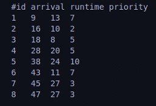
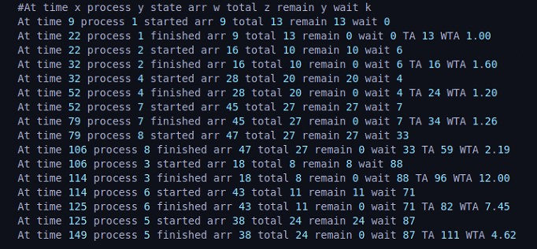
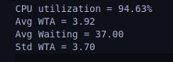
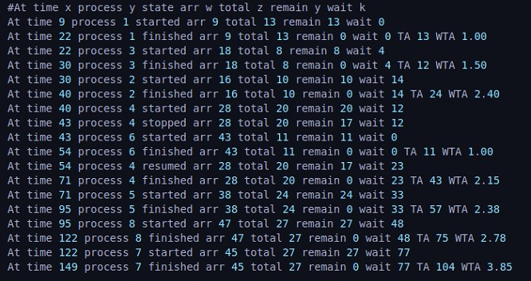
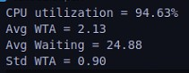
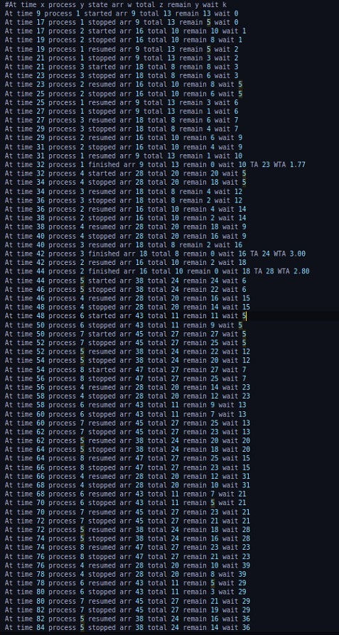
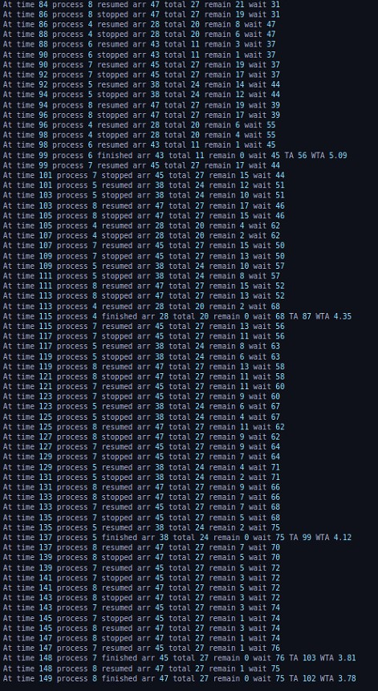
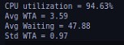

| Name | Section | Bench Number |
|---|---|---|
| Ahmed Nasser | 1 | 8 |
| Ahmed Hesham Eid | 1 | 9 |
| Abdelrahman Farid | 1 | 34 |
| Youssef Walid | 2 | 34 |
Process generator parses test case and gets Algorithm to be used in scheduling from the user.
Process generator forks clock and scheduler processes and passes processes to scheduler when their arrival time comes.
When scheduler is initialized, it loads the required algorithm interface and creates the PCB.
Each iteration in scheduler:
Checks if a new process arrived
Updates PCB if a clock cycle passed.
Checks if a preemption is needed according to the running algorithm.
Whenever a process finishes or is launched, the algorithm tries to schedule it if it is fit, this is used instead of polling each time inside the while loop and slowing the scheduler down.








RR
HPF
SRTN
| Name | SEC: BN: |
Load |
|---|---|---|
| Ahmed Nasser | SEC: 1 BN: 8 |
PCB Table Scheduler |
| Ahmed Hesham Eid | SEC: 1 BN: 9 |
Process generator Scheduler |
| Abdelrahman Farid | SEC: 1 BN: 34 |
Circular Queue Scheduler RR and SRTN |
| Youssef Walid | SEC: 2 BN: 34 |
Priority Queue Scheduler HPF |
| Task | Hrs |
|---|---|
| Algorithms | 4 Hrs |
| Data Structures | 3 Hrs |
| Scheduler | 3 Hrs |
| Process Generator | 1 Hrs |
| Debugging | 10 Hrs |
| Name | SEC: BN: |
Load |
|---|---|---|
| Ahmed Nasser | SEC: 1 BN: 8 |
PCB Table Scheduler Memory Management Design Phase 3 |
| Ahmed Hesham Eid | SEC: 1 BN: 9 |
Process generator Scheduler Memory Management Design Phase 3 |
| Abdelrahman Farid | SEC: 1 BN: 34 |
Circular Queue Scheduler RR and SRTN Buddy System v1 Memory Management Design |
| Youssef Walid | SEC: 2 BN: 34 |
Priority Queue Scheduler HPF Buddy System v2 Waiting queue implementation Memory Management Design |